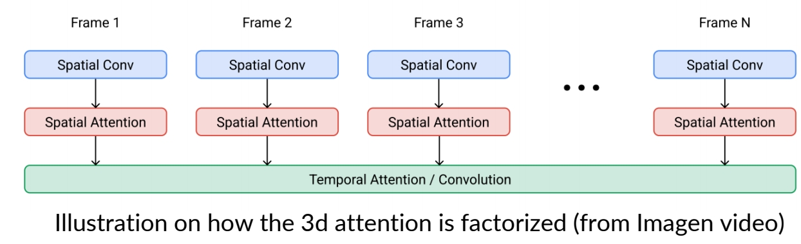
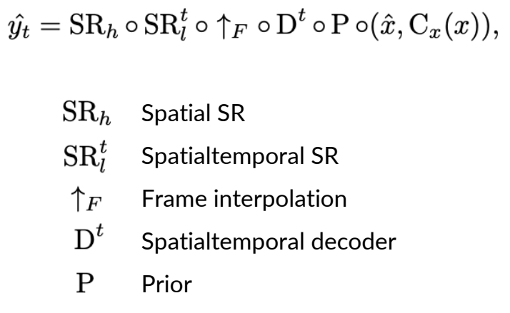
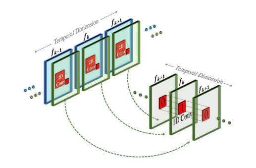
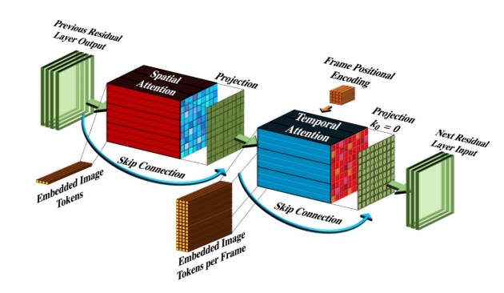
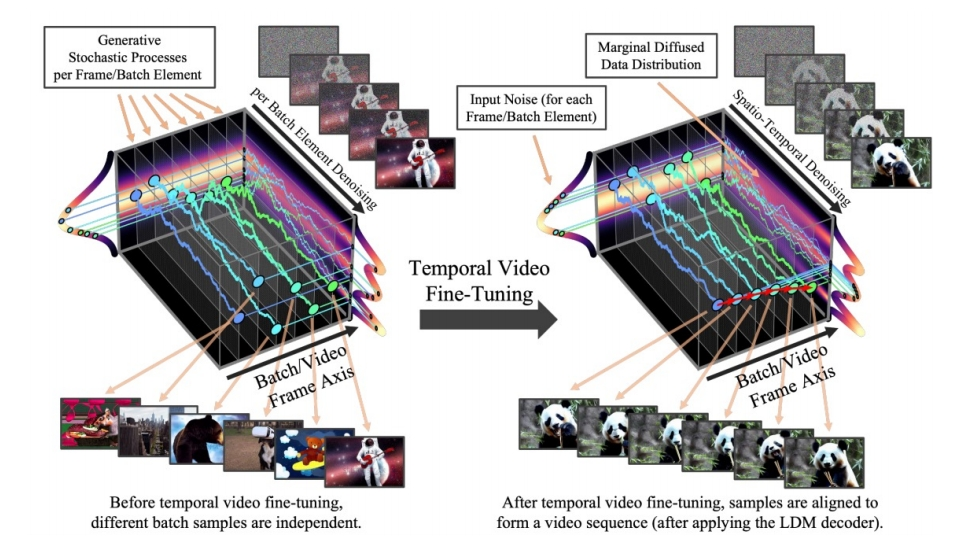
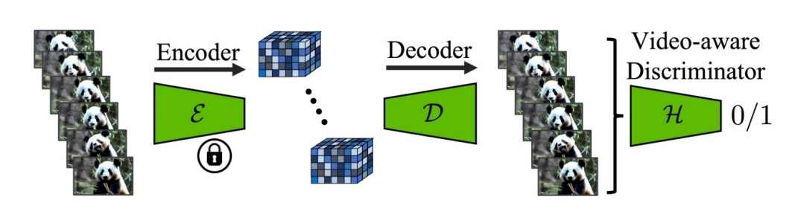
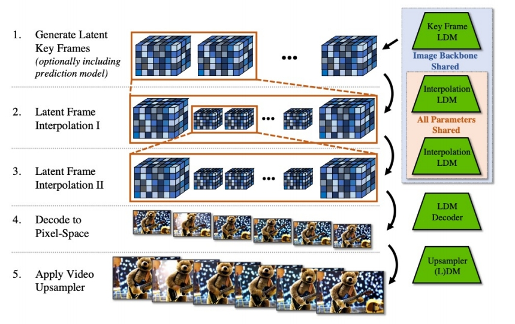

P45
Outline
-
Inverse problems
-
3D
-
Video
-
Miscellaneous
-
3D editing
P46
Instruct NeRF2NeRF
Edit a 3D scene with text instructions

Haque et al., "Instruct-NeRF2NeRF: Editing 3D Scenes with Instructions", arXiv 2023
✅ 用 Nerf 来描述 3D scene。通过文件条件把原 Nerf，变成另一个 Nerf，从而得到新的 3D scene.
P47
Instruct NeRF2NeRF
Edit a 3D scene with text instructions
- Given existing scene, use Instruct Pix2Pix to edit image at different viewpoints.
- Continue to train the NeRF and repeat the above process

Haque et al., "Instruct-NeRF2NeRF: Editing 3D Scenes with Instructions", arXiv 2023
✅ 首先有一个训好的 Nerf. 对一个特定的场景使用 Instruct Pix 2 pix 在 2D 上编辑训练新的 Werf.
✅ 基于 score disllation sampling.
P48
Instruct NeRF2NeRF
With each iteration, the edits become more consistent.
Haque et al., "Instruct-NeRF2NeRF: Editing 3D Scenes with Instructions", arXiv 2023
P49
Vox-E: Text-guided Voxel Editing of 3D Objects
- Text-guided object editing with SDS
- Regularize the structure of the new voxel grid.

Sella et al., "Vox-E: Text-guided Voxel Editing of 3D Objects", arXiv 2023
P50
Video
- Video generative models
P51
Video Diffusion Models
3D UNet from a 2D UNet.
- 3x3 2d conv to 1x3x3 3d conv.
- Factorized spatial and temporal attentions.


Ho et al., "Video Diffusion Models", NeurIPS 2022
✅ 利用 2D 做 3D，因为 3D 难训且数据少。
✅ 通到添加时序信息，把图像变成视频。此处的 3D 是 2D＋时间，而不是立体。
✅ 对向量增加一个维度，并在新的维度上做 attention.
P52
Imagen Video: Large Scale Text-to-Video
- 7 cascade models in total.
- 1 Base model (16x40x24)
- 3 Temporal super-resolution models.
- 3 Spatial super-resolution models.

Ho et al., "Imagen Video: High Definition Video Generation with Diffusion Models", 2022
✅ 通过 7 次 cascade，逐步提升顺率和像素的分辨率，每一步的训练对上一步是依赖的。
P53
Make-a-Video
- Start with an unCLIP (DALL-E 2) base network.

Singer et al., "Make-A-Video: Text-to-Video Generation without Text-Video Data", ICLR 2023
✅ 把 text 2 image model 变成 text to video model，但不需要 text-video 的 pair data.
P54
Make-a-Video

3D Conv from Spatial Conv + Temporal Conv

3D Attn from Spatial Attn + Temporal Attn
Different from Imagen Video, only the image prior takes text as input!
Singer et al., "Make-A-Video: Text-to-Video Generation without Text-Video Data", ICLR 2023
✅ 与 Imagin 的相同点：(1) 使用 cascade 提升分辨率， (2) 分为时间 attention 和空间 attention.
✅ 不同点：(1) 时间 conv＋空间 conv.
P55
Video LDM
- Similarly, fine-tune a text-to-video model from text-to-image model.

Blattmann et al., "Align your Latents: High-Resolution Video Synthesis with Latent Diffusion Models", CVPR 2023
✅ 特点：(1) 使用 latent space． (2) Encoder fix．用 video 数据 fineture Decoder.
P56
Video LDM: Decoder Fine-tuning
- Fine-tune the decoder to be video-aware, keeping encoder frozen.

Blattmann et al., "Align your Latents: High-Resolution Video Synthesis with Latent Diffusion Models", CVPR 2023
P57
Video LDM: LDM Fine-tuning
- Interleave spatial layers and temporal layers.
- The spatial layers are frozen, whereas temporal layers are trained.
- Temporal layers can be Conv3D or Temporal attentions.
- Context can be added for autoregressive generation.

Optional context via learned down-sampling operation.
For Conv3D,
shape is [batch, time, channel, height, width]
For Temporal attention,
shape is [batch \(^\ast \)height\(^\ast \) width, time, channel]
Blattmann et al., "Align your Latents: High-Resolution Video Synthesis with Latent Diffusion Models", CVPR 2023
✅ 时序层除了时序 attention，还有 3D conv，是真正的 3D，但是更复杂，且计算、内存等消耗更大。
P58
Video LDM: Upsampling
- After key latent frames are generated, the latent frames go through temporal interpolation.
- Then, they are decoded to pixel space and optionally upsampled.

Blattmann et al., "Align your Latents: High-Resolution Video Synthesis with Latent Diffusion Models", CVPR 2023
本文出自CaterpillarStudyGroup，转载请注明出处。
https://caterpillarstudygroup.github.io/ImportantArticles/